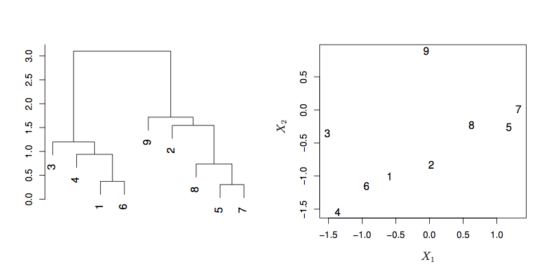
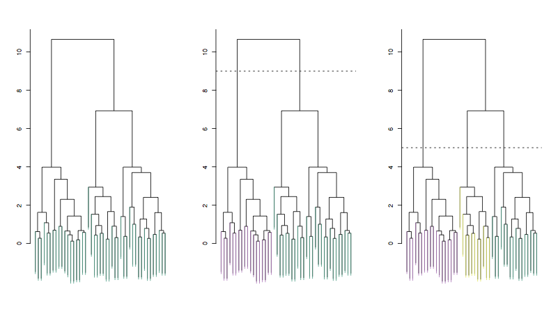
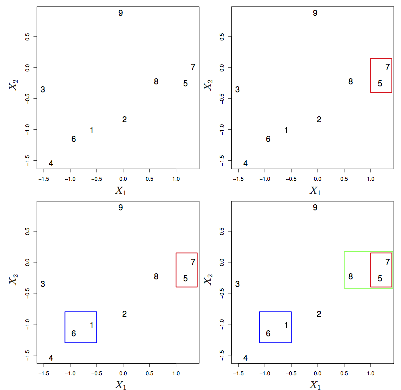
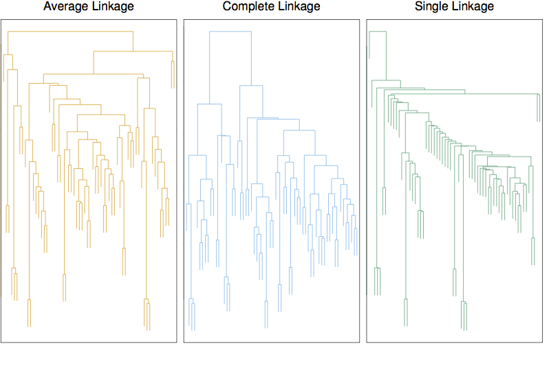

15 Clustering
15.1 K-means
An EM algorithm approach.
names(iris)## [1] "Sepal.Length" "Sepal.Width" "Petal.Length" "Petal.Width"
## [5] "Species"mod0 <- kmeans(iris %>% select(-Species), centers = 6)
To_plot <- iris
To_plot$cluster <- letters[mod0$cluster]
ggplot(To_plot, aes(x = Sepal.Length, y = Petal.Length, color = cluster, shape = Species)) +
geom_point()
ggplot(To_plot, aes(x = Sepal.Length, y = Sepal.Width, color = cluster, shape = Species)) +
geom_point()
load("Blood-Cell-data.rda")
ggplot(Cells1, aes(x=x1, y=x2)) +
geom_point()
mod <- kmeans(Cells1 %>% select(x1, x2), centers=8)
Cells1$cluster <- letters[mod$cluster]
ggplot(Cells1, aes(x=x1, y=x2, color = cluster, shape = class)) +
geom_point()
15.2 Heirarchical clustering

 

Linkage
- Complete: maximum distance between points in the two clusters
- Single: minimal distance
- Average:
- Centroid: center-to-center distance.
15.3 Example: Gene expression in cancer
## Loading required package: ggdendro## Warning: Setting row names on a tibble is deprecated.